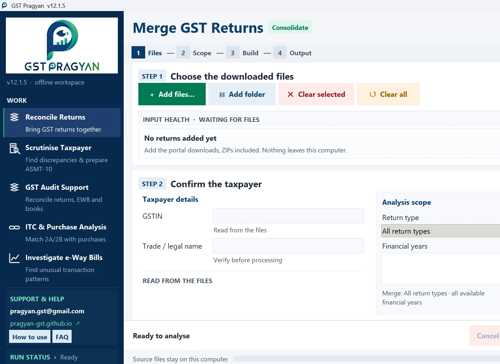

The application
A Windows desktop application that reads the returns downloaded from the portal and reconciles them against each other. It is designed for offline working, with the source files staying on the computer.

Built around the work, not a dashboard.
The application starts with the files you already have. It guides you through files, scope, build and output instead of hiding the working behind a generic dashboard.
From downloaded data to a working file.
See the working, not just the brochure.
Use the screenshot, workflow and output descriptions below to understand how the current build handles downloaded GST data.
Ask for the current build
- Email the request to pragyan.gst@gmail.com.
- The current build and release notes are sent after the request is reviewed.
- No taxpayer data is needed for a build request.
What it does
Merges the returns
GSTR-1, GSTR-3B, GSTR-2A, GSTR-2B, GSTR-9, GSTR-9C, IFF and the e-Way Bill report, for as many periods as you have, stacked into one workbook. Every original column is kept.
Runs the scrutiny checks
39 scrutiny parameters. Each runs on its own worksheet, identifies its source data and keeps tax heads separate. The detailed names should be read from the current build because they can evolve with the application release.
Thirty-nine parameters, each on its own worksheet, with every column headed by the source it reads. Each tax head is tested separately, so an excess in one head is never cancelled by a shortfall in another.
Matches the purchases
GSTR-2B against a purchase register, invoice by invoice, with Rule 37 ageing on invoices unpaid beyond a hundred and eighty days.
Drafts an ASMT-10 reference
A Word draft carrying the statutory paragraph, the amount head by head, and the month-wise working. Findings are separated into what is quantified, what needs verification first, and what is only information.
Analyses e-Way Bills
Inward and outward reports merged into one set of transactions and run through automated checks for unusual movement patterns. These are indicators, not proof.
Builds an audit pack
Books against returns, with the electronic cash and credit ledgers where they are available, and register templates to fill in.
What a useful output should tell you
This example is illustrative. It is not an extract from a taxpayer's data or a statutory conclusion.
System requirements
Windows desktop environment. The application is intended for local processing of downloaded GST files. Keep the source files on the working computer and use the current release notes supplied with the build.
Common questions
Can I work with more than one financial year?
Yes. The workflow is designed to combine available periods into one working dataset, subject to the supported file formats in the current build.
Can I work with more than one GSTIN?
Keep each taxpayer's files clearly separated unless the current build specifically supports the required multi-GSTIN workflow. Verify the selected GSTIN and legal name before processing.
Does the website upload my return data?
No website upload is required for the desktop workflow. The application is designed for local processing of imported files.
How it works
It reads what the portal gives you
Excel, JSON and PDF downloads, as downloaded. ZIP files can be added without unpacking them first. Columns are matched by their heading rather than their position, so a change to the portal export cannot silently cause the wrong column to be read.
Nothing leaves the computer
There is no account, no sign-in and no upload. The returns loaded and the workbooks written stay on the machine it runs on. See the privacy policy.
Every figure is traceable
Each worksheet states the source of each column and the provision the test rests on. A figure in the draft notice can be followed back to the row it came from.
The statutory position is dated
Late fee, interest and time limits are applied as they stood for the tax period being examined, not as they stand today. The notification behind each is recorded.
What it will not do
It does not decide anything. Every figure is a starting point for examination. Nothing produced should be issued without being checked against the record.
It cannot see what is not in the returns. Whether a supply is correctly classified, whether credit was used for business, whether an e-Way Bill represented a taxable supply: none of that is in the data. Where a question cannot be answered from the returns, the output says so instead of guessing.
It is not a substitute for the record. Books, invoices and ledgers settle questions the returns cannot.
Questions
What does it cost?
Nothing. There is no paid version and no licence.
What do I need to run it?
A Windows computer. No internet connection is needed once it is installed, and none is used for the work it does.
Does my data go anywhere?
No. It has no network features. Returns loaded and files written stay on the machine.
Which returns does it read?
GSTR-1, GSTR-3B, GSTR-2A, GSTR-2B, GSTR-9, GSTR-9C, IFF and the e-Way Bill MIS report. GSTR-3B, GSTR-9 and GSTR-9C are read from the PDF; the rest from Excel or JSON.
Does it read GSTR-1A?
It is built to, but the portal presently offers GSTR-1A only as a summary PDF, which carries table totals and no invoice rows. There is therefore nothing to add for it. A GSTR-1A filed for a period is already reflected in that period's GSTR-3B.
Can it handle more than one year?
Yes. Several years can be loaded together, and the workbook carries each year separately as well as a combined view. Years are never set off against one another.
Can it handle more than one GSTIN?
No. One registration per workbook. A second registration needs its own run.
Is the draft notice ready to issue?
No, and it is not meant to be. It is a reference draft. Every figure needs checking against the record, and the internal page of officer notes has to be removed before anything is issued.
Something looks wrong. What should I do?
Please report it, with the version number from the title bar. Contact. Most of what has been fixed was found this way.
How do I get it?
Ask by email and the current build and release notes will be sent.